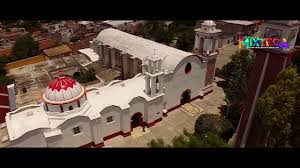
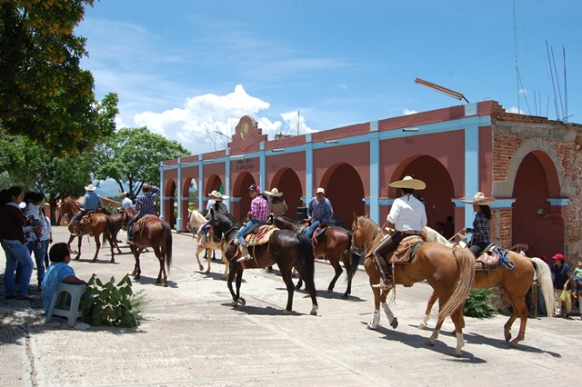
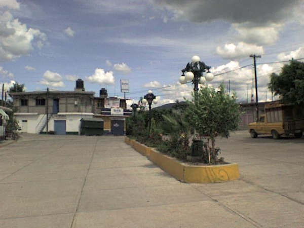

Un Pasado de Valentía

Época PrehispánicaTezoatlán tiene sus raíces profundas en la gran cultura Mixteca (Ñuu Savi o "Pueblo de la Lluvia"). Durante siglos, esta zona no solo fue un asentamiento agrícola, sino un punto estratégico de comercio y cultura que conectaba los valles con las montañas del noroeste de Oaxaca, aprovechando la riqueza natural de sus cañones.

La Lucha de IndependenciaNuestra comunidad lleva con orgullo el nombre de Segura y Luna, rindiendo homenaje a los valientes insurgentes que defendieron nuestra soberanía. Tezoatlán fue un escenario clave de resistencia donde el coraje de sus habitantes frente a las fuerzas realistas se convirtió en un símbolo de la lucha por la libertad en la región Mixteca.

Siglo XX y ActualidadEl siglo XX marcó una etapa de transformación y consolidación cívica. Tezoatlán evolucionó hacia un municipio que combina modernidad y respeto por la tradición. Hoy en día, nos mantenemos como guardianes de nuestra identidad, protegiendo las lenguas ancestrales, las faenas agrícolas y el legado artesanal que nos define ante el mundo como un pueblo orgullosamente mixteco.